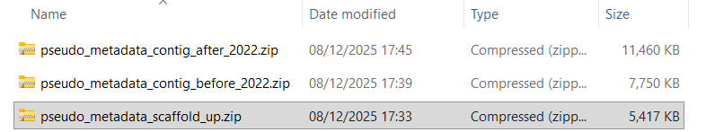

Introduction
Brief overview of the week’s objectives and context.
Continuing on from what I did last week.
Methods
Description of stuff I did.
I started by looking around about how I would best go about downloading all the metadata files without hitting the 4000 limit I usually end up hitting. I have seen stuff about “pagination”, still not sure what the hell its supposed to mean or how it really works, but it is worth a try. I am having a hard time understanding where I am with the code I have, its been a while since I wrote it and all that knowledge has gone out the window since. So, this new pagination stuff I am going to make in a “pagination_test.R” script, so as to not mess up what I currently have. I had to get Claude.ai to help with this, not proud of that, but coding at this level is just beyond what I am capable of on my own at this time. I was a bit stuck on that API pagination stuff so decided to take a look at the website. It lets me download all 60k in one massive pull, hilarious, to save on space I am taking only “GenBank”, and leaving “RefSeq”, no particular reason for that one specifically, but taking both would bloat the file and make it take longer. It wouldnt let me do 60k in one, but I managed to split it into 3 batches, roughly 20k a piece, 1st was all ones that were “scaffold, chromosome or complete”, 2nd was “contig” for 1980 - 2022, 3rd was “contig” for 23-25. So, for reference in the methods, I downloaded these as of the 8th of Dec 2025, that is something I am going to want to say. So, I have these three files, at a later time I am going to want to parse them for the host and quality metrics to filter and all that stuff. Should have the code for that though, shouldnt be too hard. Well, that was much simpler than mucking about with the API, nice.
Results
Key findings, observations, and data from this week’s work.
didnt get around to rewriting the methods, might not get around to it this week either, but its a good reminder:
Previous methods
Methods:
“Firstly, data is downloaded off of the NCBI genomic database, specifically genomic accessions for the two genera of interest, M. bovis and M. smegmata. Metadata pertaining to these accessions is also downloaded, as it helps with certain steps of the pipeline, as well as being useful for analysis. This downloading is done through the NCBI REST API, which is called through an Rscript running on the Hawk supercomputer, run by Super Computing Wales, which downloads the vast amounts of information directly to the supercomputer where it will need to be transformed.
From here, the data enters a bioinformatics pipeline. Firstly, the genomic sequences for each accession are translated into protein sequences with Prodigal version __, this stage is not run using the supercomputer’s resources, as it is minimally intensive, instead ran on my local area, using my machine’s resources. Next, the accessions are annotated for their genes, using EggNOG-mapper version ___. I split this into two stages as running them separately decreases the over-all time taken. The first stage is ‘search’, which maps the protein sequences to seed orthologs. These orthologs are then read into the next stage ‘annotate’, which produces the annotated protein contigs for each accession.
Finally, the genes need to be enriched for KEGG information. the R function ‘enrichKEGG’ from the ‘ClusterProfiler’ package does this. Producing KEGG pathway information for each accession, including BgRatio and ___. This information can then be used to plot the data on a heatmap to compare statistically significant enrichments, after a statistics step to decide which pathways are significantly more enriched in one group than another (aaron mentioned this, but I need to find it in the original scripts he gave me). A chi-squared test can be used to confirm statistical significance.”
new methods so far
Input - metadata
The pipeline inputs publicly available genomic accessions from the NCBI Genomic database. Pseudomonas was the genus of interest for this study as it has many available samples and is a model organim [etc, but this sentence feels like it could be split between Intro and Methods]. This is useful because, as will be further discussed later, few of the accessions have adequate or relevant host information for this study, with most either not having host information at all, or a large amount coming from clinical human hosts [again, feels intro-y, or maybe a “limitations” section]. This is broken down in Figure X [worth making a table of host info including humans and NA, I think so]. On the 8th of December 2025, the database was accessed through the web page: https://www.ncbi.nlm.nih.gov/datasets/genome/?taxon=286.
Through selecting all the accessions under the genus Pseudomonas, and clicking the “Download” -> “Download Package” button. It should be noted that, at the time of download, it was not possible to download all accessions in one batch [58,976 as of the 10th, forgot to write the number down, dont think that level of detail is wholly necessary, so I should be fine]. Thankfully, the option exists on the web page to filter the data, so files could be downloaded by the time range, each batch downloaded contained roughly 20,000 metadata files for reference. The option to download the genomic fasta file alongside the metadata was de-selected, as those will be downloaded once the filtering step is complete. Specifically, the files of interest in the outputs of this are “assembly_data_report.jsonl”, which contain the metadata files for all the accessions in each batch. [keep the photo of the files?]

Analysis - filtering and descriptive analysis
Due to the files of interest being in the Jsonlines, or .jsonl, format, accessing the information for filtering required specialist tools. In order to do this, duckDB was used, this was done because it is a fast and easy to use visual medium of accessing the data. It allowed the aggregation of many files into a single data-table, allowing me to run SQL queries on the data with ease. I downloded it off of the duckDB website: https://duckdb.org/
I set it up on the PATH of my machine, so that it was easier to run. I open it in a command-line window using the code duckdb pseudomonas.db -ui (adding it to the PATH of the machine means I do not need to give the full path to where I store it). In DuckDB, using the community plugin zipfs, I read in each .zip from the NCBI database as each row of a data-table. Next, I created a lookup table, with all the unique values of animal hosts and their group. To do this, I first had to use a SQL query to create a list of all the unique host values for the field. I then passed this list to the GenAI tool Claude.ai, I told it that I wanted to keep only the values that were wild animals (no NAs / NULL values, no clinical human samples and no domesticated animals, also no environmental or plant samples). Then, I asked it to group those at the level of Class (to allow comparison of hosts at the level of mammals vs birds vs amphibians etc). At first, it only handed back vertebrate taxa, but I figured crustacean and insect hosts should count to, so I asked it to give me invertebrate hosts too.
This lead to Claude producing a lookup table with 2 columns (host, animal group). This is visualised in Figure Y [I dont think X with the clinical human and other info is necessary, but I think Y is, aaron also wants another table of some sort characterising the 992 samples, but that comes later]. When filtering the data-table to just those that match the unique lookup, there are 992 accessions with those hosts. As seen in Figure Y, this encompases a for mammals, b for fish, c for amphibians etc[fill in when put figure in]. This is not yet accounting for quality metrics, which will be specified at a later point, as running the samples through the pipeline is best done at the weekend, and quality filtering is not a crucial step at this point (it will not add, only subtract, and it does not take long enough to process through the pipeline to make the cutting down critical). I will have to ask Aaron what the lower limit of group size is, in my mind I have either 30 or 10, if it is 30, I have 6 groups, if 10, there are 9 groups. Reptiles is a major vertebrate taxa that hits 16 accessions, so if the limit is 30, maybe it could be combined with amphibians into a “herp” group, not sure that is valid though. Side note: why do people study amphs and reps together? These numbers include nematodes and protists, which Aaron may not want to see. So, in short, I shall have to go over this with him at some point, but it is not critical to do that before pipeline-ing.
NOTE: There is some other table that Aaron said he wants to see, I will have to do that at some point
SIDE NOTE: (for after putting Figure Y in, which will give exact numbers) Because the group sizes are so big for mammals and fish and birds (over 100 each). It is possible I could do comparisons inside of each host taxa, potentially breaking it down by spcies of Pseudomonas (I.e. for those species that have more than 10 accessions.
Input - genomic information
Once the 992 total accessions were decided upon, based on the specifications Aaron and I discussed, the genomic .fasta files could be downloaded off of the NCBI database. This was done using the R script “fastafile_getter.R”, ran through “fasta_getter_runner.sh”. Fasta files are big, and thus using Slurm resources makes download faster. These were downloaded directly onto the Hawk supercomputer (SCW), where they will be processed through the pipeline.
Analysis - processing of genomic fastas
Firstly, the R script “genomic_fasta_extractor.R” pulls out just the genomic fasta, as the protein fasta is sometimes also downloaded (where there is already one on the NCBI), however, the inconsistency in existence necessitates that I turn them into protein fastas on my end. This is the next step, the slurm script “prodigal_translationiser.sh” translates each genomic fasta into a protein fasta, adds the accession to the contig labels and batches all 992 into one file (thus why the accession needs to be in each contig label). This is the ideal format for being annotated using EggNOG-mapper.
Once the final agregated protein files were created, they could then be sent through Eggnog-mapper’s search stage on slurm, using the “eggnog_searcher.sh” file. The stages were separated to increase speed. The “etc.emapper.seedorthologs” [check to make sure syntax is right] were then annotated on the “high mem” area of hawk. This produced…
proto-intro ideas
what am I introducing in the intro of this? remember, broad to thin
paragraph on host association in bacteria - definitely
paragraph on Pseudomonas - definitely
I can draw a link between them. If I start on host-association and then talk about how Pseudo has been studied for that in its paragraph.
paragraph on the advantages and limitations of using pre-existing data - maybe[?]
If I choose that one then I can shift that stuff about a lack of host data into it
??? - why host association is useful to study [hmm… not sure thats it, would be part of par 1]
??? - introduce the mechanism maybe, I am using Pseudo as the tool, but what does it do that I am looking for in what hosts [feels like it overlaps with the next bit, maybe though]
aims and objectives of the study more specifically, hypotheses and that lot - def
[feels like there is a paragraph missing, goes from very broad to very specific, maybe reading around will help
Conclusion
Summary of outcomes, implications, and next steps.
Scientific Papers
Relevant literature read this week.